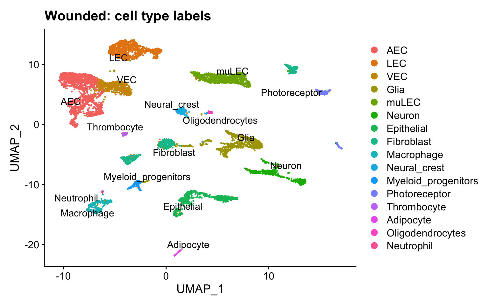
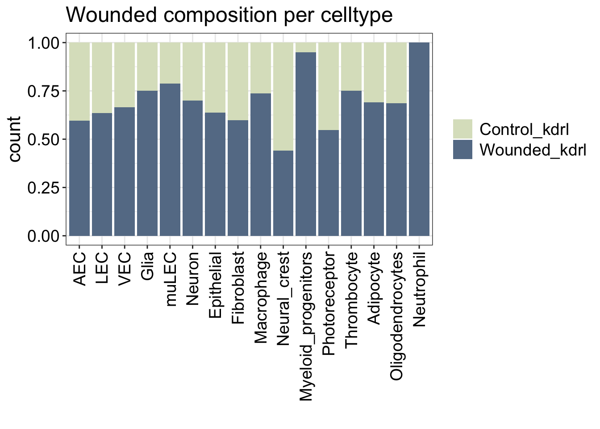
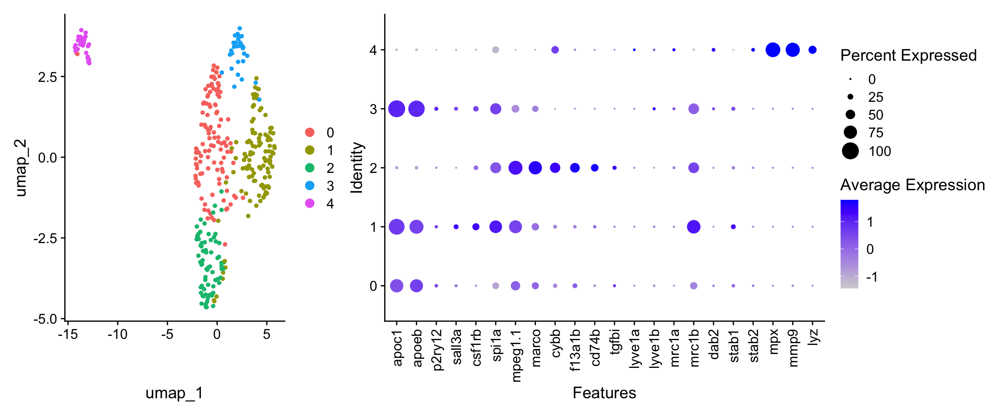

Last updated: 2026-06-09
Checks: 7 0
Knit directory:
Matters_Arising_Shimizu_etal/
This reproducible R Markdown analysis was created with workflowr (version 1.7.1). The Checks tab describes the reproducibility checks that were applied when the results were created. The Past versions tab lists the development history.
Great! Since the R Markdown file has been committed to the Git repository, you know the exact version of the code that produced these results.
Great job! The global environment was empty. Objects defined in the global environment can affect the analysis in your R Markdown file in unknown ways. For reproduciblity it’s best to always run the code in an empty environment.
The command set.seed(20260420) was run prior to running
the code in the R Markdown file. Setting a seed ensures that any results
that rely on randomness, e.g. subsampling or permutations, are
reproducible.
Great job! Recording the operating system, R version, and package versions is critical for reproducibility.
Nice! There were no cached chunks for this analysis, so you can be confident that you successfully produced the results during this run.
Great job! Using relative paths to the files within your workflowr project makes it easier to run your code on other machines.
Great! You are using Git for version control. Tracking code development and connecting the code version to the results is critical for reproducibility.
The results in this page were generated with repository version bfa129f. See the Past versions tab to see a history of the changes made to the R Markdown and HTML files.
Note that you need to be careful to ensure that all relevant files for
the analysis have been committed to Git prior to generating the results
(you can use wflow_publish or
wflow_git_commit). workflowr only checks the R Markdown
file, but you know if there are other scripts or data files that it
depends on. Below is the status of the Git repository when the results
were generated:
Ignored files:
Ignored: .DS_Store
Ignored: .Rhistory
Ignored: .Rproj.user/
Ignored: analysis/not_tracked/
Ignored: output/.DS_Store
Ignored: output/data/
Ignored: renv/
Unstaged changes:
Modified: output/figures/Silva_All_ImmuneCells_dotplot_allimmunecells.pdf
Modified: output/figures/Silva_All_ImmuneCells_umap_celltype.pdf
Modified: output/figures/Silva_All_ImmuneCells_umap_celltype_nolegend.pdf
Modified: output/figures/Silva_MG_dotplot_MG_subpop.pdf
Modified: output/figures/Silva_MG_dotplot_locationmarker.pdf
Modified: output/figures/Silva_MG_dotplot_locationmarker_flipped.pdf
Modified: output/figures/Silva_MG_stacked_barplot_celltype_subclusters_OG_clusters.pdf
Modified: output/figures/Silva_MG_umap_celltype.pdf
Modified: output/figures/Silva_MG_umap_celltype_nolegend.pdf
Modified: output/figures/Silva_MG_umap_celltype_subclusters.pdf
Modified: output/figures/Silva_MG_umap_celltype_subclusters_nolegend.pdf
Modified: output/figures/Wounded_GSE270486_dotplot_myeloid_celltype.pdf
Modified: output/figures/Wounded_GSE270486_stacked_barplot_myeloid_celltype_wounded.pdf
Modified: output/figures/Wounded_GSE270486_umap_Sample_Name.pdf
Modified: output/figures/Wounded_GSE270486_umap_Sample_Name_nolegend.pdf
Modified: output/figures/Wounded_GSE270486_umap_myeloid_celltype.pdf
Modified: output/figures/Wounded_GSE270486_umap_myeloid_celltype_nolegend.pdf
Note that any generated files, e.g. HTML, png, CSS, etc., are not included in this status report because it is ok for generated content to have uncommitted changes.
These are the previous versions of the repository in which changes were
made to the R Markdown
(analysis/Gaudi_Wounded_7dpf_putativeCAM_analysis.Rmd) and
HTML (docs/Gaudi_Wounded_7dpf_putativeCAM_analysis.html)
files. If you’ve configured a remote Git repository (see
?wflow_git_remote), click on the hyperlinks in the table
below to view the files as they were in that past version.
| File | Version | Author | Date | Message |
|---|---|---|---|---|
| html | 88e1642 | Michelle Meier | 2026-06-01 | Build site. |
| Rmd | ec41be3 | Michelle Meier | 2026-06-01 | wflow_publish("analysis/Gaudi_Wounded_7dpf_putativeCAM_analysis.Rmd") |
| html | 2827343 | Michelle Meier | 2026-06-01 | Build site. |
| Rmd | 066bb0f | Michelle Meier | 2026-06-01 | wflow_publish("analysis/Gaudi_Wounded_7dpf_putativeCAM_analysis.Rmd") |
The purpose of this analysis is to investigate the putatitive CAM population Shimizu et al have presented in their Matter Arising to Nature.
This is a dataset that we have made publicly available through our latest study Convergent evolution of scavenger cell development at brain borders and we will be using the RDS object we provided for the Wounded 7dpf dataset (GSE270486).
Important dataset specs:
Dev stage: 7dpf
Tissue: Head
Sorting: kdrl, mCherry+ FACS (very leaky, lots of other cells)
suppressPackageStartupMessages({
library(here)
library(scran)
library(scater)
library(scuttle)
library(scales)
library(readr)
library(Seurat)
library(ggpubr)
library(tidyverse)
library(qs2)
library(patchwork)
})seurat <- qs_read(here("data/Level_01_D10026_Wounded.qs2"))plot_sizing <- theme_bw()+ theme(axis.title = element_text(size = 16),
axis.text = element_text(size = 14, colour = "black"),
plot.title = element_text(size = 18),
legend.text = element_text(size = 14),
legend.title = element_blank())
plot_sizing_seurat <- theme(axis.title = element_text(size = 16),
axis.text = element_text(size = 14, colour = "black"),
plot.title = element_text(size = 18),
legend.text = element_text(size = 14))
rotate_x <- theme(axis.text.x = element_text(angle = 90, vjust = 0.5, hjust=1))
strip_fix <- theme(strip.background = element_rect(fill = "white"),
strip.text = element_text(size = 14))wounded_colours <- c(
"#dbe2c6", #wildtype
"#657c95" #wounded
)
names(wounded_colours) <- c("Control_kdrl", "Wounded_kdrl")
seurat$Sample_Name <- factor(seurat$Sample_Name, levels = names(wounded_colours)) #wildtype always firstShow cell type labels:
DimPlot(seurat, label = T,repel=T) + ggtitle("Wounded: cell type labels")
This dataset contains both wounded as well as control samples. Most of the immune cells actually come from the wounded sample.
seurat@meta.data %>%
group_by(L1_Predicted_phenotype, Sample_Name) %>%
summarise(., count =n()) %>%
ggplot(., aes(x = L1_Predicted_phenotype, y= count, fill=Sample_Name)) +
geom_bar(stat="identity", position = "fill") +
scale_fill_manual(values = wounded_colours) +
plot_sizing + rotate_x + xlab("") +
ggtitle("Wounded composition per celltype")`summarise()` has regrouped the output.
ℹ Summaries were computed grouped by L1_Predicted_phenotype and Sample_Name.
ℹ Output is grouped by L1_Predicted_phenotype.
ℹ Use `summarise(.groups = "drop_last")` to silence this message.
ℹ Use `summarise(.by = c(L1_Predicted_phenotype, Sample_Name))` for
per-operation grouping (`?dplyr::dplyr_by`) instead.
| Version | Author | Date |
|---|---|---|
| 2827343 | Michelle Meier | 2026-06-01 |
Get absolute numbers for macrophages. Neutrophils are all wounded
seurat@meta.data %>%
group_by(L1_Predicted_phenotype, Sample_Name) %>%
summarise(., count = n()) %>%
filter(., L1_Predicted_phenotype == "Macrophage")`summarise()` has regrouped the output.
ℹ Summaries were computed grouped by L1_Predicted_phenotype and Sample_Name.
ℹ Output is grouped by L1_Predicted_phenotype.
ℹ Use `summarise(.groups = "drop_last")` to silence this message.
ℹ Use `summarise(.by = c(L1_Predicted_phenotype, Sample_Name))` for
per-operation grouping (`?dplyr::dplyr_by`) instead.# A tibble: 2 × 3
# Groups: L1_Predicted_phenotype [1]
L1_Predicted_phenotype Sample_Name count
<fct> <fct> <int>
1 Macrophage Control_kdrl 85
2 Macrophage Wounded_kdrl 237expression_colours <- c("#d9d9d9", "#40004b")
colours_myeloid_celltypes <- c("grey", "black", "red")
make_wounded_subfigures <- function(object, genes_to_plot=genes){ #title
p1 <- DimPlot(object, group.by = "myeloid_celltype", cols = colours_myeloid_celltypes) + NoAxes() + ggtitle("Myeloid populations (n=349)")
p2 <- DimPlot(object, group.by = "Sample_Name", cols = wounded_colours) + NoAxes() + ggtitle("Wounding status")
p3 <- DotPlot(object, features = genes_to_plot, group.by = "myeloid_celltype", cols = expression_colours) + rotate_x + ylab("") + ggtitle("Gene expression patterns") #change genes
p4 <- object@meta.data %>%
group_by(myeloid_celltype, Sample_Name) %>%
summarise(., count =n()) %>%
ggplot(., aes(x = myeloid_celltype, y= count, fill=Sample_Name)) +
geom_bar(stat="identity", position = "stack") +
scale_fill_manual(values = wounded_colours) +
geom_text(aes(label = count),
position = position_stack(vjust=0.5),size=5, color="black",
)+
plot_sizing + xlab("cluster") +rotate_x + ggtitle("Wounded status composition")
plot <- (p1+p2+plot_layout(ncol=2, axes="collect")) +p3+p4 & theme(plot.title = element_text(size = 18, face = "italic"))
# #add plotlayout
return(plot)
}seurat <- SetIdent(seurat, value = "L1_Predicted_phenotype")
myeloid <- subset(seurat, idents = c("Macrophage", "Neutrophil"))
myeloidAn object of class Seurat
38833 features across 349 samples within 2 assays
Active assay: SCT (19142 features, 5022 variable features)
3 layers present: counts, data, scale.data
1 other assay present: RNA
2 dimensional reductions calculated: pca, umap# Github issue [here](https://github.com/satijalab/seurat/issues/6719) suggests that rerunning SCTransform actually is not necessarily requiredThey don’t say that they’ve rescaled/re-run SCT.
myeloid <- myeloid %>%
RunPCA(., verbose = F) %>%
FindNeighbors(dims = c(1:10), verbose = F) %>%
FindClusters(resolution = 0.5, verbose = F) %>%
RunUMAP(dims = c(1:10), verbose = F)Warning: DimReduc pca changing from DimReduc to DimReducWarning: Command RunPCA.SCT changing from SeuratCommand to SeuratCommandWarning: Command FindNeighbors.SCT.pca changing from SeuratCommand to
SeuratCommandWarning: The default method for RunUMAP has changed from calling Python UMAP via reticulate to the R-native UWOT using the cosine metric
To use Python UMAP via reticulate, set umap.method to 'umap-learn' and metric to 'correlation'
This message will be shown once per sessionWarning: DimReduc umap changing from DimReduc to DimReducWarning: Command RunUMAP.SCT.pca changing from SeuratCommand to SeuratCommandMake the two plots to see if we can roughly get their clustering structure + gene expression patterns.
umap <- DimPlot(myeloid)
#update genes
genes <- c("apoc1", "apoeb", "p2ry12", "sall3a", #microglia
"csf1rb", "spi1a", "mpeg1.1", "marco", #shared
"cybb", "f13a1b", "cd74b", "tgfbi", #CAM
"lyve1a","lyve1b", "mrc1a","mrc1b" , "dab2", "stab1", "stab2" , #functional genes for BAM equivalence
"mpx", "mmp9", "lyz"#neutro
)
dotplot <- DotPlot(myeloid, features = genes, group.by = "SCT_snn_res.0.5") + rotate_x
umap + dotplot + plot_layout(widths = c(1,2))
| Version | Author | Date |
|---|---|---|
| 2827343 | Michelle Meier | 2026-06-01 |
Cluster 0,1 and 3 together would be microglia, cluster 2 would be putative “CAM” and cluster 4 neutrophils.
myeloid$SCT_snn_res.0.5 %>% table().
0 1 2 3 4
112 109 70 31 27 Adding cell type labels with n and making pretty plots.
myeloid$myeloid_celltype <- case_when(myeloid$SCT_snn_res.0.5 %in% c(0,1,3) ~ "MG\nn=252",
myeloid$SCT_snn_res.0.5 == 2 ~ "MG/Macro subpop\nn=70",
myeloid$SCT_snn_res.0.5 == 4 ~ "Neutrophil\nn=27")Let’s save this!
filename <- here("output/data/seurat_objects/Wounded_7dpf_Level_02_immuneCells.qs2")
qs_save(object = myeloid, file = filename)
sessionInfo()R version 4.5.0 (2025-04-11)
Platform: aarch64-apple-darwin20
Running under: macOS Sequoia 15.7.4
Matrix products: default
BLAS: /Library/Frameworks/R.framework/Versions/4.5-arm64/Resources/lib/libRblas.0.dylib
LAPACK: /Library/Frameworks/R.framework/Versions/4.5-arm64/Resources/lib/libRlapack.dylib; LAPACK version 3.12.1
locale:
[1] en_US.UTF-8/en_US.UTF-8/en_US.UTF-8/C/en_US.UTF-8/en_US.UTF-8
time zone: Australia/Melbourne
tzcode source: internal
attached base packages:
[1] stats4 stats graphics grDevices datasets utils methods
[8] base
other attached packages:
[1] future_1.70.0 patchwork_1.3.2
[3] qs2_0.1.7 lubridate_1.9.5
[5] forcats_1.0.1 stringr_1.5.1
[7] dplyr_1.2.1 purrr_1.2.2
[9] tidyr_1.3.2 tibble_3.3.1
[11] tidyverse_2.0.0 ggpubr_0.6.3
[13] Seurat_5.4.0 SeuratObject_5.4.0
[15] sp_2.2-1 readr_2.2.0
[17] scales_1.4.0 scater_1.38.1
[19] ggplot2_4.0.2 scran_1.38.1
[21] scuttle_1.20.0 SingleCellExperiment_1.32.0
[23] SummarizedExperiment_1.40.0 Biobase_2.70.0
[25] GenomicRanges_1.62.1 Seqinfo_1.0.0
[27] IRanges_2.44.0 S4Vectors_0.48.1
[29] BiocGenerics_0.56.0 generics_0.1.4
[31] MatrixGenerics_1.22.0 matrixStats_1.5.0
[33] here_1.0.2 workflowr_1.7.1
loaded via a namespace (and not attached):
[1] RcppAnnoy_0.0.23 splines_4.5.0 later_1.4.2
[4] polyclip_1.10-7 fastDummies_1.7.5 lifecycle_1.0.5
[7] rstatix_0.7.3 edgeR_4.8.2 rprojroot_2.1.1
[10] globals_0.19.1 processx_3.8.6 lattice_0.22-6
[13] MASS_7.3-65 backports_1.5.1 magrittr_2.0.3
[16] limma_3.66.0 plotly_4.12.0 sass_0.4.10
[19] rmarkdown_2.29 jquerylib_0.1.4 yaml_2.3.10
[22] metapod_1.18.0 httpuv_1.6.16 otel_0.2.0
[25] sctransform_0.4.3 spam_2.11-3 spatstat.sparse_3.1-0
[28] reticulate_1.46.0 cowplot_1.2.0 pbapply_1.7-4
[31] RColorBrewer_1.1-3 abind_1.4-8 Rtsne_0.17
[34] git2r_0.36.2 ggrepel_0.9.8 irlba_2.3.7
[37] spatstat.utils_3.2-2 listenv_0.10.1 goftest_1.2-3
[40] RSpectra_0.16-2 spatstat.random_3.4-5 dqrng_0.4.1
[43] fitdistrplus_1.2-6 parallelly_1.47.0 codetools_0.2-20
[46] DelayedArray_0.36.1 tidyselect_1.2.1 farver_2.1.2
[49] ScaledMatrix_1.18.0 viridis_0.6.5 spatstat.explore_3.8-0
[52] jsonlite_2.0.0 BiocNeighbors_2.4.0 Formula_1.2-5
[55] progressr_0.19.0 ggridges_0.5.7 survival_3.8-3
[58] tools_4.5.0 ica_1.0-3 Rcpp_1.0.14
[61] glue_1.8.0 gridExtra_2.3 SparseArray_1.10.10
[64] xfun_0.52 withr_3.0.2 BiocManager_1.30.27
[67] fastmap_1.2.0 bluster_1.20.0 callr_3.7.6
[70] digest_0.6.37 rsvd_1.0.5 timechange_0.4.0
[73] R6_2.6.1 mime_0.13 scattermore_1.2
[76] tensor_1.5.1 spatstat.data_3.1-9 utf8_1.2.6
[79] renv_1.1.4 data.table_1.18.2.1 httr_1.4.7
[82] htmlwidgets_1.6.4 S4Arrays_1.10.1 whisker_0.4.1
[85] uwot_0.2.4 pkgconfig_2.0.3 gtable_0.3.6
[88] lmtest_0.9-40 S7_0.2.1-1 XVector_0.50.0
[91] htmltools_0.5.8.1 carData_3.0-6 dotCall64_1.2
[94] png_0.1-9 spatstat.univar_3.1-7 knitr_1.50
[97] rstudioapi_0.17.1 tzdb_0.5.0 reshape2_1.4.5
[100] nlme_3.1-168 cachem_1.1.0 zoo_1.8-15
[103] KernSmooth_2.23-26 parallel_4.5.0 miniUI_0.1.2
[106] vipor_0.4.7 pillar_1.11.1 grid_4.5.0
[109] vctrs_0.7.3 RANN_2.6.2 promises_1.5.0
[112] stringfish_0.18.0 car_3.1-5 BiocSingular_1.26.1
[115] beachmat_2.26.0 xtable_1.8-8 cluster_2.1.8.1
[118] beeswarm_0.4.0 evaluate_1.0.3 cli_3.6.5
[121] locfit_1.5-9.12 compiler_4.5.0 rlang_1.2.0
[124] ggsignif_0.6.4 future.apply_1.20.2 labeling_0.4.3
[127] ps_1.9.1 getPass_0.2-4 plyr_1.8.9
[130] fs_1.6.6 ggbeeswarm_0.7.3 stringi_1.8.7
[133] deldir_2.0-4 viridisLite_0.4.3 BiocParallel_1.44.0
[136] lazyeval_0.2.3 spatstat.geom_3.7-3 Matrix_1.7-3
[139] RcppHNSW_0.6.0 hms_1.1.4 statmod_1.5.1
[142] shiny_1.13.0 ROCR_1.0-12 broom_1.0.12
[145] igraph_2.2.3 RcppParallel_5.1.11-2 bslib_0.9.0